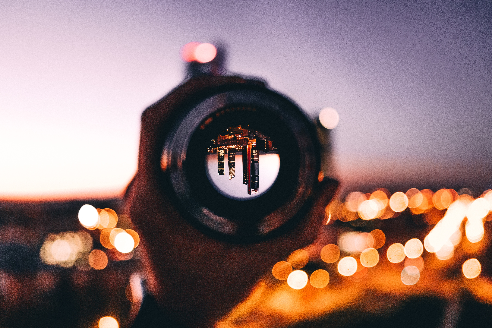

Fotógrafos destacados

Henri Cartier-Bresson (Francés, 1908-2004).
Robert Doisneau (Francés, 1912-1994).
Robert Capa (Húngaro, 1913-1954).
Diane Arbus (Estadounidense, 1923-1971).
Alberto Korda (Cubano, 1928-2001).
Joseph Koudelka (Checoeslovaco, 1938-)
Sebastião Salgado (Brasileño, 1944-).
Annie Leibovitz (Estadounidense, 1949-).